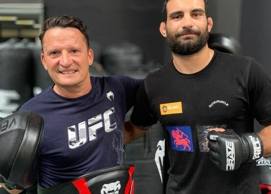
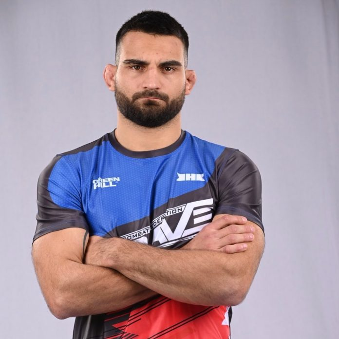
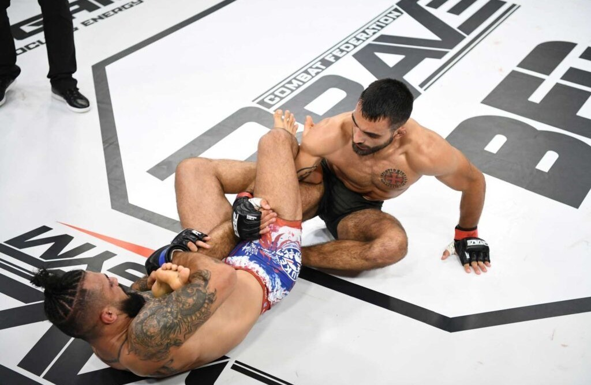

Benoit Saint Denis
Benoit Saint Denis est un maitre Francais des arts martiaux mixtes, combattant pour la plus prestigieuse organisation de MMA au monde, l'UFC.
Il est aussi une des têtes du MMA francais à l'international aux cotés de Cyril Gane autre combattant de l'UFC.
Jeunesse
Benoit nait le 18 décembre 1995 à Nîmes. il est l'ainé d'une fratrie de cinq garcons, son père est militaire à la légion étrangère et pratique le judo tandis que sa mère est professeur. Suite au train de vie mouvementé de son père, il passe le début de son enfance dans sa ville natale puis déménage plusieurs fois à Mulheim, Rambouillet et Münster en Allemagne pour terminer son adolescence à Lille. Il a pratiqué le Scoutisme et le Judo en Allemagne et en France de 8 à 16 ans et a obtenu sa ceinture Noire. Il s’essaye également au football et au rugby en club. Depuis tout jeune, Benoit est inspiré par la littérature épique, les histoire chevaleresque et les récits de la vie militaire de son grand-père. En cours Benoit n'a pas de dificulté et obtient un bac scientifique pour ensuite, à ses 18 ans s'engager dans l'armée.
Armée
A 18 ans Benoit s'engage à l'armée, mais ne le fait pas comme les autres. Au lieux de s'engager comme soldat dans l'armée conventionnelle, il décide de passer les tests de recrutement des forces spéciales francaise qu'il réussit avec brio. Après avoir passé 1 ans de formation, Benoit devient un opérateur des forces spéciales au premier régiment de parachutistes d'infanterie de marine, unité la plus prestigieuse de l'armée de terre. Pendant 4 années il effectue des missions de contre-terrorisme au Sahel avec la force sabre où il participe à la reprise de la ville de tombouctou. Le 15 septembre 2017 il est décoré de la médaille de reconnaissance de la nation et de la croix du combattant le 27 septembre de cette même année. Benoit quitte l'armée le 3 mars 2019 pour se consacrer totalement aux arts martiaux mixtes sport qu'il découvre 2 ans plus tôt.


Arts martiaux mixtes
C'est en 2018, alors qu'il est encore dans les forces spéciales que Benoit débute la boxe amateur et le jiu-jitsu brésilien. En septembre de cette même année il s'essaie aussi au MMA et gagne son premier tournoi amateur. Il devient champion de france de jiu-jitsu en 2019 et c'est à se mmoment là que son coatch Christophe Savoca l'encourage à participer à une détéction organisé par Daniel Woirin un des plus grands coatch francais de MMA qui a notamment entrainé la légende de l'UFC Anderson Silva. Il est ensuite invité par Daniel a rejoindre son équipe
pour commencer sa carriere de combatant professionel de MMA. Il s'en suit 8 victoires dont 6 en 11 mois contre des combattants mieux classé que le francais. se qui ne laissera pas indifférent Dana White le président de l'utimate fighting championship, organisation qu'il rejoint en octobre 2021.


